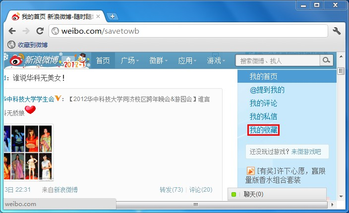
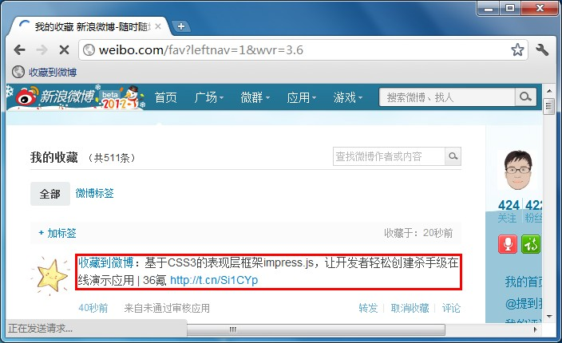

你平时会收藏微博，方便以后再看？
微博是你收藏有用和有趣的东西的重要枢纽？
OK，那你很可能的我的用户！
我可以把网页也收藏到微博的“收藏”里！
如何使用
1、把下面的链接添加到浏览器的书签栏，并用新浪微博帐号登录
2、看到感兴趣的网页，点击“收藏到微博”即可收藏到微博的“收藏”
3、登录新浪微博，进入“我的收藏“，继续浏览或分享收藏过的网页
PS.收藏是私密的，别人看不到你收藏了什么
使用图解
1、上网浏览时发现感兴趣的网页，但暂时没时间看，点击“收藏到微博”

2、登录你的新浪微博，进入“我的收藏”
3、在”我的收藏“里可以看到收藏过的网页，继续浏览或分享它们
